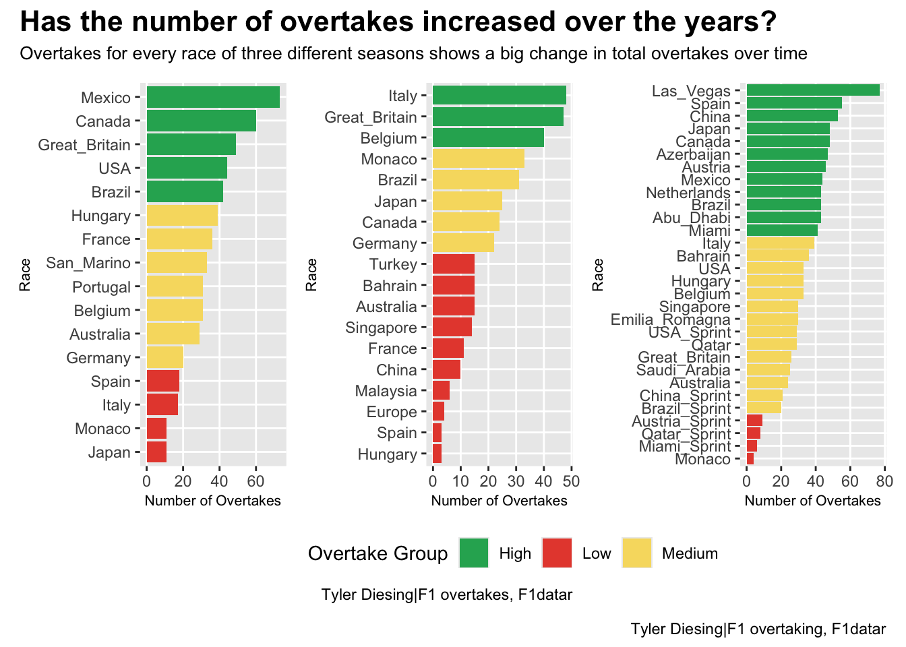
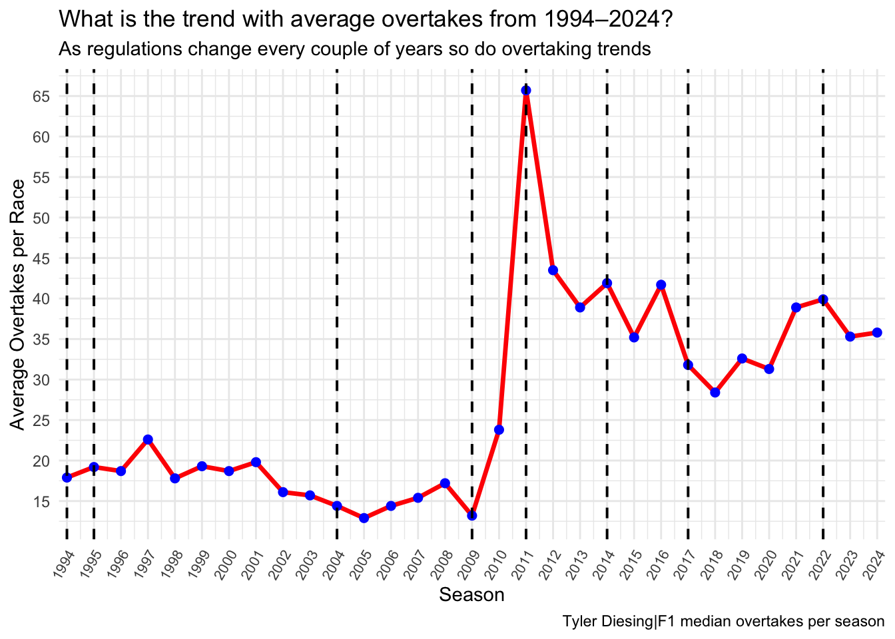

As F1 innovates further, is the racing getting better?
Formula 1
F1
racing
motorsport
Author
Tyler Diesing
Published
May 2, 2025
With each new season of Formula 1 comes new technology, regulations, and innovations all aimed at making the car the fastest it can possibly be. From the earliest cars that could only reach 130mph all the way to the modern marvels of today that can reach 230mph, F1 just keeps getting faster and faster, but does that mean the racing is getting better? My goal is to examine overtaking data from different eras of the sport to answer the question: Does a faster, safer, more advanced formula equal better racing and more overtakes? Or is being fast simply not enough?
From 1990 to present day, F1 has seen impressive amounts of innovation and change in the way the cars are constructed, but how does this show in performance on the track? Let’s take a look at this through the lens of three vastly different seasons with vastly different regulations.
Code
library(waffle)library(dplyr)library(ggplot2)library(patchwork)group_colors <-c("Low"="#E74C3C", "Medium"="#F7DC6F", "High"="#27AE60")overtakerace <-read.table(header=TRUE, text="Season Race Overtakes TV Percentage1990 USA 44 8 18.181990 Brazil 42 4 9.521990 San_Marino 33 4 12.121990 Monaco 11 7 63.641990 Canada 60 19 31.671990 Mexico 73 15 20.551990 France 36 6 16.671990 Great_Britain 49 11 22.451990 Germany 20 2 10.001990 Hungary 39 8 20.511990 Belgium 31 6 19.351990 Italy 17 4 23.531990 Portugal 31 5 16.131990 Spain 18 1 5.561990 Japan 11 1 9.091990 Australia 29 8 27.591990 Season 544 109 20.042008 Australia 15 11 73.332008 Malaysia 6 5 83.332008 Bahrain 15 9 60.002008 Spain 3 2 66.672008 Turkey 15 15 100.002008 Monaco 33 13 39.392008 Canada 24 18 75.002008 France 11 10 90.912008 Great_Britain 47 29 61.702008 Germany 22 17 77.272008 Hungary 3 3 100.002008 Europe 4 2 50.002008 Belgium 40 19 47.502008 Italy 48 36 75.002008 Singapore 14 10 71.432008 Japan 25 12 48.002008 China 10 9 90.002008 Brazil 31 19 61.292008 Season 366 239 65.302024 Bahrain 36 26 72.222024 Saudi_Arabia 25 17 68.002024 Australia 24 12 50.002024 Japan 48 36 75.002024 China_Sprint 21 12 57.142024 China 53 38 71.702024 Miami_Sprint 6 4 66.672024 Miami 41 26 63.412024 Emilia_Romagna 30 21 70.002024 Monaco 4 4 100.002024 Canada 48 22 45.832024 Spain 55 34 61.822024 Austria_Sprint 9 6 66.672024 Austria 46 24 52.172024 Great_Britain 26 15 57.692024 Hungary 33 17 51.522024 Belgium 33 22 66.672024 Netherlands 43 28 65.122024 Italy 39 27 69.232024 Azerbaijan 47 24 51.062024 Singapore 30 21 70.002024 USA_Sprint 29 21 72.412024 USA 33 22 66.672024 Mexico 44 33 75.002024 Brazil_Sprint 20 10 50.002024 Brazil 43 27 62.792024 Las_Vegas 77 54 70.132024 Qatar_Sprint 8 4 50.002024 Qatar 29 22 75.862024 Abu_Dhabi 43 35 81.402024 Season 930 607 65.27")season_choice <-1990season_data_1990 <- overtakerace %>%filter(Season == season_choice, Race !="Season") %>%mutate(overtake_group =case_when( Overtakes <20~"Low", Overtakes <40~"Medium",TRUE~"High" ))bar1 <-ggplot(season_data_1990, aes(x =reorder(Race, Overtakes), y = Overtakes, fill = overtake_group)) +geom_col() +coord_flip() +scale_fill_manual(values = group_colors) +labs(x ="Race",y ="Number of Overtakes",fill ="Overtake Group", ) +theme(legend.position ="none" )season_choice <-2008season_data_2008 <- overtakerace %>%filter(Season == season_choice, Race !="Season") %>%mutate(overtake_group =case_when( Overtakes <20~"Low", Overtakes <40~"Medium",TRUE~"High" ))bar2 <-ggplot(season_data_2008, aes(x =reorder(Race, Overtakes), y = Overtakes, fill = overtake_group)) +geom_col() +coord_flip() +scale_fill_manual(values = group_colors) +labs(x ="Race",y ="Number of Overtakes",fill ="Overtake Group",caption ="Tyler Diesing|F1 overtakes, F1datar" )season_choice <-2024season_data_1990 <- overtakerace %>%filter(Season == season_choice, Race !="Season") %>%mutate(overtake_group =case_when( Overtakes <20~"Low", Overtakes <40~"Medium",TRUE~"High" ))bar3 <-ggplot(season_data_1990, aes(x =reorder(Race, Overtakes), y = Overtakes, fill = overtake_group)) +geom_col() +coord_flip() +scale_fill_manual(values = group_colors) +labs(x ="Race",y ="Number of Overtakes",fill ="Overtake Group", ) +theme(legend.position ="none" )bar1 + bar2 + bar3 +plot_layout(guides ="collect") +plot_annotation(title ="Has the number of overtakes increased over the years?",subtitle ="Overtakes for every race of three different seasons shows a big change in total overtakes over time",caption ="Tyler Diesing|F1 overtaking, F1datar" ) &theme(plot.title =element_text(size =16, face ="bold"),axis.title =element_text(size =8), plot.subtitle =element_text(size=10), panel.grid.minor =element_blank(), legend.position ="bottom" )

Formula 1 cars in 1990 were brutal animals. Small chassis with explosively powerful v12 engines and no driver assists made for a well rounded season with decently close racing on many occasions. Smaller, lighter cars made overtakes fairly easy on most tracks.
Fast forward to 2008 and things look much different. The cars are bigger with more bodywork and screaming V-8 engines which seemed to have a bit more impact on overtaking. Bigger cars make it harder to overtake while putting out more aerodynamic turbulence and similar engine regulations make it harder to catch up and pass.
Now let’s take a look at the 2024 season, where cars are longer, wider, and more aerodynamically complex than ever before. In order to counteract this these cars also have drag reduction systems (DRS) and much more reliable V-6 engines.
Looking at these seasons you can easily see how changing regulations and innovations impact the action on track. Smaller cars in 1990 made for easier overtakes, but unreliable and complex engines tended to hold drivers back a bit, meaning most races fell between the 30-40 overtake range. 2008 was the last year before a regulation change meaning the cars had been upgraded and innovated to the very finest of margins within the previous regs. This typically can make races more of a stalemate because cars are similar in speeds. This is also when cars started getting bigger and more aerodynamic, making it harder to get past each other. 2024 is directly in the middle of the current regulation life span, so cars are still being upgraded. Reliable engines, DRS, faster speeds, and advanced tech make for simplified overtaking and more overtakes in general, but this doesn’t come without its drawbacks. Modern cars are multitudes bigger than those of the old days, making overtakes on narrow tracks much harder (just look at Monaco). Advanced aerodynamics can make for closer racing, but it also creates much more turbulent air which can unsettle a car travelling close behind and make it harder to pass.
So while overtaking may have gotten a bit harder with size and aero concerns, it has gotten much more frequent.
One reason why there are much more overtakes in the modern era is because of the introduction of DRS in 2011. Drag reduction was introduced as a tool to help drivers get an overtake done by opening up the rear wing and shedding drag. If a driver is within 1 second behind another driver, they get DRS to help them overtake. In an era where size and aero turbulence was making overtakes slower and more difficult, how much did DRS really help?
This chart shows the number of overtakes per race between the 2010 (pre DRS) and 2011 (DRS added) seasons.
You can clearly see how the number of overtakes drastically expanded across the board, even in races where it was usually much harder to get an overtake done. Even just looking at races like Monaco, Abu Dhabi, and Japan you see a huge difference, which is very telling considering that these tracks are some of the hardest to overtake on. If you ask me, I’d say DRS clearly accomplished its goal as well as maybe even being one of the most important innovations in this modern era of F1.
The importance of DRS becomes even clearer when you take a step back and look at the average number of overtakes in every season since the 90’s. Looking at this line chart you can also see how regulation changes affected the number of overtakes in a season.
Code
library(ggplot2)overtake_data <-data.frame(Season =1994:2024,Overtakes =c(17.9, 19.2, 18.7, 22.6, 17.8, 19.3, 18.7, 19.8, 16.1, 15.7,14.4, 12.9, 14.4, 15.4, 17.2, 13.2, 23.8, 65.7, 43.5, 38.9,41.9, 35.2, 41.7, 31.8, 28.4, 32.6, 31.3, 38.9, 39.9, 35.3, 35.8 ))reg_changes <-data.frame(Year =c(1994, 1995, 2004, 2009, 2011, 2014, 2017, 2022))ggplot(overtake_data, aes(x = Season, y = Overtakes)) +geom_line(color ="red", size =1.2) +geom_point(size =2, color ="blue") +scale_x_continuous(breaks = overtake_data$Season,expand =expansion(mult =c(0.01, 0.01)) ) +scale_y_continuous(breaks =seq(10, 70, by =5),expand =expansion(mult =c(0.05, 0.05)) ) +labs(title ="What is the trend with average overtakes from 1994–2024?",subtitle ="As regulations change every couple of years so do overtaking trends",x ="Season",y ="Average Overtakes per Race",caption ="Tyler Diesing|F1 median overtakes per season" ) +theme_minimal() +theme(axis.text.x =element_text(angle =60, hjust =1, size =8) ) +geom_vline(data = reg_changes, aes(xintercept = Year),color ="black", linetype ="dashed", size =0.7 )

Things were pretty tame up to 2010 with fewer regulation changes and relatively a lower average overtake rate. Then comes 2011 with the DRS regulations and you can see how the number of overtakes skyrocketed as a result. After 2011 the average number of overtakes stayed consistently high throughout every season and regulation change compared to 1994-2010.
Things seem to have mellowed out a bit since that initial introduction of DRS in 2011, likely a result of teams gaining more understanding of the effects and uses of DRS after the new tech was introduced. That being said, the numbers are still consistently higher than they had ever been in the sport.
Every time F1 races in narrow tracks like Monaco and Japan or at aerodynamically turbulent tracks like Abu Dhabi and Qatar there is always a loud heap of people who shout that F1 cars don’t put on a show like they used to, but when you look at the data over a long period of time you can see that there’s more overtakes going on than ever before.